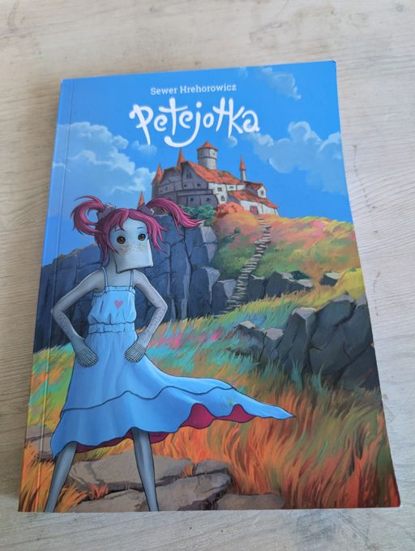
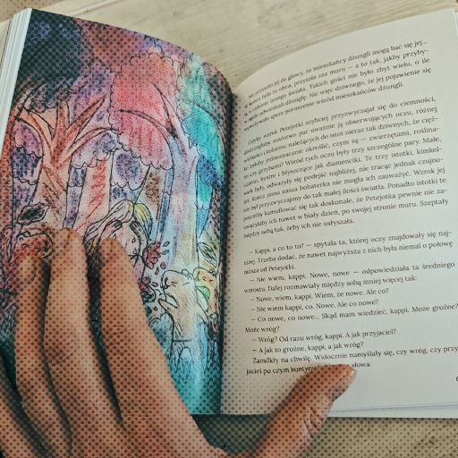
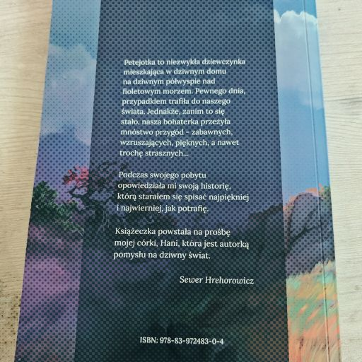

Petejotka to nie do końca zwczajna dziewczynka, która mieszka w Dziwnym Domu na szczycie wysokiego klifu nad Filotetowym Morzem i wraz z siostrą - Paciają - przeżywa dziwne, dzikie i niesamowite przygody.
Przygody?Opowiedziała mi je, kiedy gościła w naszym domu. A ja (och, nie tylko ja) słuchałem ich z zapartym tchem. W końcu postanowiłem je spisać i wydać w formie książki.
Ale... ona istnieje? Ta Petejotka?Bo w pewnym sensie ona istnieje. Petejotka istnieje, nie książka - choć książka też przecież istnieje, i to w sensie całkiem dosłownym. A w jakim sensie istnieje Petejotka? Cóż... nie będę na razie zdradzał :).
To książka dla dzieci



Dla dzieci (choć nie dla maluchów), dla dorosłych... czemu nie? Oni też lubią bajki :). A ta bajka... cóż, jest nieco inna. A dlaczego? Bo to historia, która ma swoją historię.
Historia... ma historię?To było tak: Hania rysowała komiksy - ale bez dymków. Prosiła mnie, bym te komiksy czytał...
Bez dymków?No właśnie. Ciężko czytać bez dymków, prawda? Próbowałem to wytłumaczyć, w końcu rozmowa zeszła na rysownie komiksów, i poowiedziałem, że ja też, kiedyś, jako dziecko, rysowałem komiksy.
Ale co ma komisk do książki?Myślisz pewnie - co ma komiks do książki? Ano trochę ma. Bo książki też pisałem - jako dziecko. Całkiem zawzięcie, choć żadnej nie skończyłem. Hania poprosiła mnie, żebym przeczytał.
Znalazłeś je?Znalazłem je, odkurzyłem i przeczytałem. I przypomniałem sobie. I spłynęło na mnie olśnienie, że ta książeczka, pisana w zeszycie, przeze mnie, dziesięcioletniego, okazała się czymś trwalszym niż wiele innych rzeczy, którym w dorosłym życiu przypisywałem większą wagę.
Ha!Postanowiłem więc napisać Petejotkę - ale to w skrócie, bo skąd się wzięła Petejotka, to inna historia.
Kolejna historia?Ale... na razie nie będę jej opowiadał. To chyba byłoby już za dużo.
A ten koleś to autor
Nazywam się Sewer Hrehorowicz i jestem autorem Petejotki, a prywatnie także tatą Hani i Mai, i to dla nich zacząłem pisać tę książeczkę.
Ale fajnie!Och, bardzo im się podobała. Pomyślałem więc że, innym dzieciom także może się spodobać.
A poza pisaniem?Poza pisaniem (nie tylko książek i nie tylko dla dzieci) zajmuję się ilustracją, malarstwem, grafiką (dziś rzadziej niż kiedyś) a także tworzeniem gier. Z tą branżą jestem zawodowo związany od ponad dziesięciu lat (och, kto by te lata liczył).
Poczytaj mi kawałek
Wybuch dziwnego drzewa to pierwsze wydarzenie, o jakim opowiedziała nam Petejotka. Twierdziła, że od niego wszystko się zaczęło. Jak to było, pytacie?
Wybuch... drzewa? Ale o co chodzi?Pitotura przy pasku nosił pęk kluczy. Do swojej pracowni, w której warzył mikstury, ale nie tylko — także do drzwi, których nie wolno było otwierać. Dzieci — jak to dzieci — bardzo chciały się dostać do pracowni taty. Właśnie dlatego, że nie było wolno. Skradały się nieraz za nim i z szeroko otwartymi z ciekawości oczami patrzyły, jak Pitotura wchodzi i wychodzi z pracowni, otwiera ją i zamyka.
Aha, czyli ten Pito... cośtam, to ich tata? I co tam widziały?Jedynie przez chwilę i tylko z daleka mogły zajrzeć do środka. Dziewczynki nie mogły dojrzeć wiele — zdążyły mignąć im rzędy różnokształtnych flaszek gęsto wypełniających półki ustawione po sam sufit. To właśnie pobudzało ich ciekawość. Bardziej jeszcze, niż gdyby mogły tam wejść. Ukrywały się, żeby ich Pitotura nie widział, ale ja myślę, że widział, a tylko udawał, że nie widzi.
A gdzie ta pracownia była?Pitotura chodził po do pracowni codziennie, a Petejotka i Paciaja za nim. On otwierał, zamykał, otwierał, zamykał, a one patrzyły, patrzyły... Pracownia znajdowała się w piwnicy, do zamykających ją, masywnych, drewnianych drzwi schodziło się po kilku wyżłobionych ze starości, kamiennych schodkach. Drzwi otwierało się specjalnym kluczem dwunastościennym.
Co to znowu za klucz?Petejotka i Paciaja doskonale wiedziały, co to za klucz. Tyle razy widziały przecież, jak Pitotura otwierał i zamykał, wchodził i wychodził. Otwierał, zamykał, wchodził, wychodził. Codziennie. Nie było łatwo otworzyć te drzwi, ponieważ trzeba było znać sekwencję dwunastu ruchów, a przy tym wykonać ją bezbłędnie w odpowiedniej kolejności.
Sekwencję?Pytacie, co to sekwencja? To znaczy 10 wiele ruchów po kolei — najpierw jeden, potem drugi, następnie trzeci i tak dalej. Tak więc — aby otworzyć tajną pracownię Pitotury, nie wystarczyło po prostu obrócić klucza w zamku — zwłaszcza, że ani nie było normalnego klucza, ani normalnego zamka. Dwunastościenny klucz wkładało się w czobryszkę...
Przepraszam, w co?Nie wiem co to i nie pytajcie mnie. Petejotka próbowała mi kiedyś wyjaśnić, jak działa i jak wygląda czobryszka, ale ja się tego nie podejmuję. W tej czobryszce wykonywało się dwanaście ruchów kluczem, diabelnie skomplikowanych. Petejotka i Paciaja tyle razy jednak widziały, jak ich tata otwiera, zamyka, wchodzi, wychodzi...
Aha...Otwiera, zamyka, wchodzi,
wychodzi. Rozumiecie już, do czego zmierzam? Oczywiście, znały tę
sekwencję doskonale. Kiedy wspominałem, że z Paciai było niezłe ziółko, to wierzcie mi,
że nie na darmo o tym pisałem. Pewnego ranka wpadła do pokoju siostry, gdy ta jeszcze spała i zaczęła
niecierpliwie potrząsać jej
hamakiem.
— Petejotko, Petejotko! — krzyczała szeptem.
Nie pytajcie mnie, jak
krzyczy się szeptem i nie dziwcie się temu; w ogóle nie dziwcie się
wielu rzeczom.
— Co jest, Paciaja? — odpowiedziała Petejotka.
Osia jeszcze jej się kleiły od snu. Zaraz się to jednak zmieniło i osia
te zrobiły się wielkie, a Petejotka zaskrzeczała ochryple, bowiem siostra pomachała jej przed trąbą
dwunastościennym kluczem.
Och, dalej się działo! Dziewczynki przeżyły razem wiele dziwnych, dzikich i niesamowitcyh przygód — czasem nawet trochę strasznych... Jeśli więc chcesz wiedzieć, co było dalej, to kup książkę :).
Ale ja chcę teraz!Rozumiem jednak, że poniektórzy są mniej cierpliwi. Dla takich poniektórych jest jeszcze audiobook. Tak, zobacz niżej, tam jest link. Możesz wejść na YouTube, posłuchać większego fragmentu. A jak chcesz całość, to proszę bardzo, kup książkę :). Dostęp do pełnego audiobooka dostaniesz szybciej, bo on już jest, a ksiażkę trzeba dopiero wydrukować.
Gdzie można książkę kupić
Bo można kupić? Powiedz, że można.Bo można ją kupić - choć to nie jest książka z gatunku tych, co to sobie spokojnie leżą na półce w księgarni. A ja tak już mam, że wszystko muszę sam, wię postanowiłem sam ją zaprojektować, złożyć i wydrukować. I zrobiłem to. I pięknie wyszło, ale...
Ale co?Książki się skończyły, więc trzeba będzie zrobić dodruk. I ja chcę zrobić dodruk, ale to działa tak: żeby to miało sens, musi tę książkę więcej osób kupić. Tak więc tutaj, przez tę stronę, zbieram zamówienia na Petejotkę.
I jak to działa?Trzeba więć będzie poczekać na książkę - ale na dobre rzeczy warto czekać, nie sądzisz?
A długo trzeba będzie czekać?Na dole strony jest taki licznik, który odlicza czas do końca akcji. Kiedy dojdzie do zera, i kiedy wystarczająca ilość osób zamówi książkę, to ja robię dodruk, a potem wysyłam książki do tych, którzy zamówili. I to tyle.
Dlaczego nie pójdziesz do wydawnictwa?Bo widzisz - napisanie, zaprojektowanie, złożenia takiej książki (do tego jeszcze okładka i ilustracje) to naprawdę kupa roboty. I kiedy pomyślałem, że lwią część zysków miałbym oddać, to odezwał się we mnie taki głosik, który powiedział: "nie". Wpierw cienki, nieśmiały, ale zaraz przerodził się w stanowczy głos.
O czym jest książka
Może jesteś rodzicem, i zastanawiasz się: co, po co, dlaczego, czy warto, dzy dobre to, czy uczy, i temu podobne.
Audiobook
Tak, nagrałem nawet audiobooka. W prawdziwym studio, i myślę, że fajnie to wyszło. Sprawdź, posłuchaj. Udostępniam fragmnent — bo kto kupiłby ksiażkę, gdybym dał całość? Rozumiesz to, prawda?
Ale ja chcę całość!Rozumiem, że chcesz całość, ale to jest fragment. Całość jest dostępna tylko dla tych, którzy kupią książkę. To chyba jest fair, nie sądzisz? :). Ale jeśli chcesz, to proszę bardzo - kup książkę. Dostęp do pełnego audiobooka otrzymasz szybciej, bo on już jest, a książkę trzeba dopiero wydrukować.